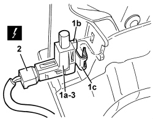

5550D18 HANDBRAKE ON WARNING LIGHT SWITCH - R+R
- Path
- Procedures > 55 ELECTRICAL EQUIPMENT > 5550 WARNING AND MANOEUVRING INDICATORS > 5550D BRAKE AND REVERSING LIGHTS > 5550D18 HANDBRAKE ON WARNING LIGHT SWITCH - R+R
- Kind
- repair procedure (removal / refitting; the operation number is the code)
- Applies to
- all engines; all production periods
- Interactive page
- https://sloeber94.github.io/elrnDB/#/939011054
Applies to: all engines; all production periods
 Removing
Removing
 Refitting
RefittingFor the left and right sides.
Op. 7045A10 FRONT SEAT (ONE), LEFT OR RIGHT - R.R.
Op. 7040L71 BOX ON TUNNEL REAR COATING - R R
Op. 5010C32 AIR VENT ON TUNNEL COVER FOR REAR SEATS - R.R.
Op. 7040L37 GEAR LEVER TRIM - R.R
Op. 3380A44 HANDBRAKE/LINKAGE PROTECTION - R+R
Op. 7040L20 TUNNEL COVER - R.R
1. Move the switch (1a) releasing the retainers (1b) and (1c).
2. Disconnect the electrical connection.
Description | Component |
|---|---|
HANDBRAKE ON SWITCH |
3. Keep the switch.

Applies to: all engines; all production periods
Refitting
Removing- Check that the switch is not damaged and, if necessary, conduct an electrical test.
- Connect the electrical connection.
- Position the switch and attach the retainers.
- Check that the handbrake warning light is working.
Op. 7040L20 TUNNEL COVER - R.R
Op. 3380A44 HANDBRAKE/LINKAGE PROTECTION - R+R
Op. 7040L37 GEAR LEVER TRIM - R.R
Op. 5010C32 AIR VENT ON TUNNEL COVER FOR REAR SEATS - R.R.
Topics linked from this page (7)
- 3380A44 HANDBRAKE/LINKAGE PROTECTION - R+R
- 5010C32 AIR VENT ON TUNNEL COVER FOR REAR SEATS - R.R.
- 7040L20 TUNNEL COVER - R.R
- 7040L37 GEAR LEVER TRIM - R.R
- 7040L71 BOX ON TUNNEL REAR COATING - R R
- 7045A10 FRONT SEAT (ONE), LEFT OR RIGHT - R.R.
- I040 HANDBRAKE SWITCH
Topics that link to this page (10)
- G010 NO ACOUSTIC WARNING FOR HANDBRAKE APPLIED WITH VEHICLE MOVING
- K066 HANDBRAKE WARNING LIGHT DOES NOT COME ON (WITH HANDBRAKE APPLIED)
- K069 PARKING BRAKE FAILURE WARNING LIGHT ON
- K072 HANDBRAKE APPLIED WARNING LIGHT
- E4010 INSTRUMENT PANEL - WIRING DIAGRAM
- E4010 INSTRUMENT PANEL - COMPONENT LOCATION
- E4010 INSTRUMENT PANEL - WIRING DIAGRAM
- E4010 INSTRUMENT PANEL - COMPONENT LOCATION
- E4010 INSTRUMENT PANEL - WIRING DIAGRAM
- E4010 INSTRUMENT PANEL - COMPONENT LOCATION